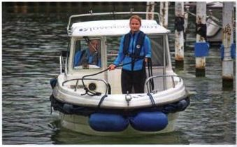
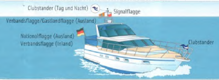

Beim Ein- und Auslaufen, Hineinmanövrieren in Boxen oder Festmachen im »Päckchen« helfen gewisse Regeln und Ratschläge, deren Beachtung das Leben auf dem Wasser und in Häfen vereinfacht. Hier ein paar Tipps:
► Schreien oder rufen Sie nicht laut im Manöver.
► Kommunizieren Sie nicht über Stege und Schiffe hinweg.
► Fragen Sie den Hafenmeister nach einem freien Liegeplatz, wann bezahlt werden soll, und folgen Sie seinen Anweisungen.
► Hinterlassen Sie Sanitärgebäude sauberer, als sie diese vorgefunden haben.
► Bieten Sie bei Manövern ihre Hilfe an (rechnen Sie aber mit freundlicher Ablehnung). Im Bedarfsfall richten Sie sich nach den Anweisungen des Schiffsführers.
► Kommentieren Sie keine Manöver anderer Skipper.
► Fragen Sie beim Hafenmeister nach einer geeigneten Box.
► Falls Sie eine freie Box belegen, informieren Sie sofort den Hafenmeister; ebenso, wenn Sie diese wieder verlassen.
► Legen Sie ihre Fender an Deck, bevor sie in Boxen ein- oder ausfahren.
► Vermeiden Sie Sog und Wellenschlag.
► Machen Sie Stromkabel nicht zu Stolperfallen.
► Kommentieren Sie keine Manöver anderer Skipper.
► Üben Sie gängige Knoten mit der ganzen Besatzung.
► Belegen Sie Fender nicht auf Relingsstützen.
► Falls eine fremde Leine als festes Auge belegt ist, belegen Sie Ihre eigene darunter.
► Belassen Sie beide Enden Ihrer Leine an Bord.
► Belegen und verstauen Sie nach dem Auslaufen Ihre Leinen und Fender sicher.

► Clubstander (Tag und Nacht).
► Signalflagge / Nationalflagge (Ausland).
► Verbandsflagge (Inland).
